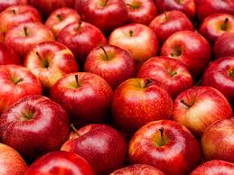
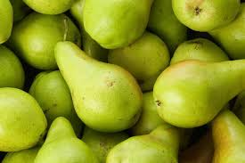

Top Ten Fruits and Veggies!
-
Apples!
-
Bananas!
-
Oranges!
-
Grapes!
-
Corn!
-
Peas!
-
Potatoes!
-
Tomatoes!
-
Pears!
-
Strawberries!
Apples are the perfect healthy sweet and sour treat!
More information about these sweet and sour fruits!
Bananas are the perfect snack for on the go!
Learn more about these yellow wonders!Oranges are the perfect lunchtime fruit!
Learn all about oranges!
Grapes are the perfect after school snack!
Learn all the fruits of kings!
Corn is a summer BBQ staple!
Learn all about corn!Peas are the perfect veggie to go with a nice dinner!
Learn all about the veggies that go with everything!Mashed, fried, or baked potatoes always make a great starch in a meal!
Learn all about the perfect starchy veggie!Tomatoes are great on a sandwich, in a salad, or as ketchup!
Learn all about tomatoesPears make the perfect snack
Learn all about pears!
Strawberries are a great summer treat!
Learn all about these sweet summer treats!